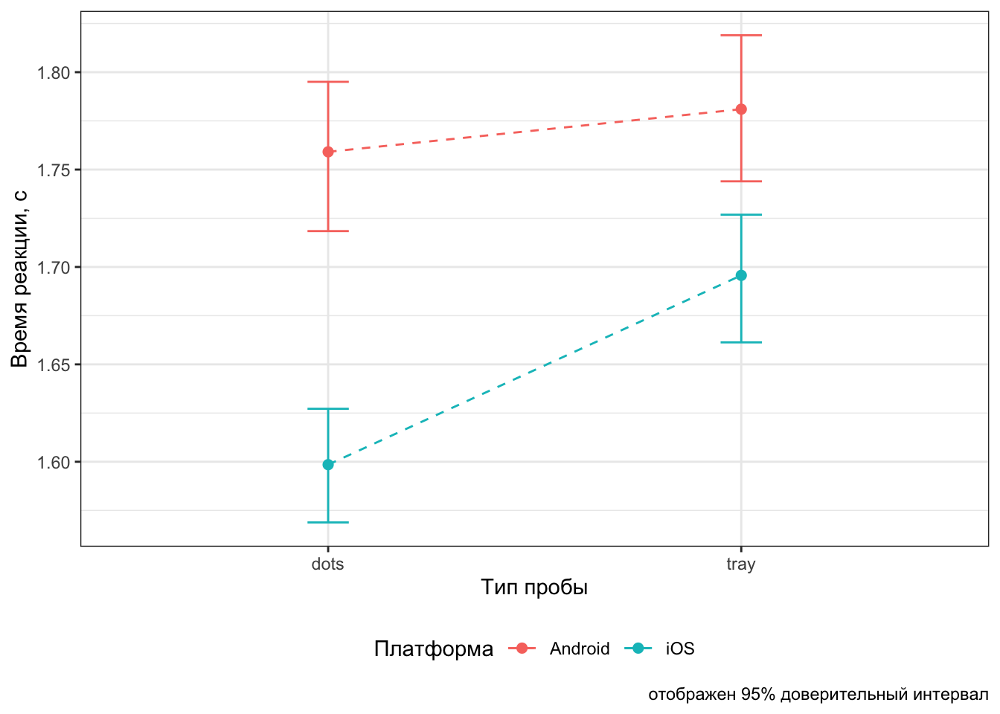

19 Дисперсионный анализ
Мы знаем, что в регрессионную модель можно включать как количественные (непрерывные), так и категориальные (дискретные) предикторы. Более того, мы знаем, как при включении категориальных предикторов изменяется модель и что значат предикторы. Теперь рассмотрим случай, когда в модели останутся только категориальные предикторы.
19.1 Параметризация индикаторов и параметризация эффектов
На модель только с категориальными предикторами можно смотреть двумя разными способами. С первым мы уже частично знакомы. Если мы из моделей, рассмотренных в предыдущей главе исключим количественные предикторы, то получим модель такого вида:
\[ y_i = b_0 + b_1 I_{\mathrm{Group_2}} \]
Здесь у нас один категориальный предиктор с двумя уровнями — переменная-индикатор \(I_{\mathrm{Group_2}}\) задаёт принадлежность наблюдения ко второй группе.
Если же у нашего категориального предиктора будет более двух уровней, то модель примет следующий вид:
\[ y_i = b_0 + b_1 I_{\mathrm{Group_2}} + b_2 I_{\mathrm{Group_3}} \]
Как это помыслить визуально? Вот так:
КАРТИНКА
Собственно, как мы обсуждали в предыдущей главе, в интерсепт модели \(b_0\) уходит baseline для группы 1, а коэффициенты при переменных \(I_{\mathrm{Group_i}}\) показывают, насколько изменяется baseline в других группах по сравнению с группой 1.
Кодировку групп с помощью переменных-индикаторов можно представить в такой табличке:
ТАБЛИЦА
Такая кодировка позволяет переписать уравнение модели в более простом виде — теперь и вовсе как обычная множественная регрессия:
\[ y_i = b_0 + b_1 x_1 + b_2 x_2 \]
Этот способ подбора коэффициентов модели называется параметризация индикаторов (dummy coding, treatment parametrization, reference cell model).
В R модель подбирается автоматически в параметризации индикаторов. Подгрузим данные. Мы с ними уже знакомы — это всё тот же эксперимент об иконках share.
## ── Attaching packages ─────────────────────────────────────── tidyverse 1.3.0 ──## ✓ ggplot2 3.3.2 ✓ purrr 0.3.4
## ✓ tibble 3.0.4 ✓ dplyr 1.0.2
## ✓ tidyr 1.1.2 ✓ stringr 1.4.0
## ✓ readr 1.4.0 ✓ forcats 0.5.0## ── Conflicts ────────────────────────────────────────── tidyverse_conflicts() ──
## x dplyr::filter() masks stats::filter()
## x dplyr::lag() masks stats::lag()theme_set(theme_bw())
share <- read_csv("https://raw.githubusercontent.com/angelgardt/mk_ggplot2/master/sharexp_data.csv")##
## ── Column specification ────────────────────────────────────────────────────────
## cols(
## .default = col_double(),
## trialtype = col_character(),
## platform = col_character()
## )
## ℹ Use `spec()` for the full column specifications.Напомним себе переменные:
trialtype— тип пробы (tray/dots/both)setsize— количество стимулов в пробе (8/12/16)time1— время первого кликаtime2— время второго кликаid— индентификатор испытуемогоplatform— платформа смартфона (Android/iOS)
Возьмем для примера в качестве категориальной переменной setize — в ней три уровня 8, 12 и 16 (хотя в реальном анализе лучше, конечно, рассматривать её как непрерывную).
Также необхожимо дополнительно поготовить наши данные, а именно, аггрегировать их. Зачем?
Есть два момента. Первый — содержательный. Так как эксперимент подразумевал, что испытуемый проходит по 50 проб в каждом экспериметальном условии, показатели по каждому из условий необхожимо усреднить, ведь эти 50 проб — это не 50 отдельных наблюдений, а попытка нивелировать случайные эффекты и получить точную оценку времени реакции в каждом из сочетаний условий.
Второй момент — статистический. Если данные не аггрегировать, то наша модель сочтёт, что в ней 50 × [кол-во испытуемых] независимых наблюдений1 для каждого экспериментального условия, что значительно повлияет на статистическую мощность анализа и может привести к неверным результатам. Количество независимых наблюдений — это количество наших респондентов. Мощность будет в этом случае чрезвычайно завышена, и даже самые ничтожные эффекты могут оказаться статистически значимыми, так как p-value зависит от объёма выборки.
share %>%
mutate(setsize = as_factor(setsize)) %>% # перезаписываем переменную как фактор
group_by(id, setsize) %>%
summarise(time1 = mean(time1)) -> share_1## `summarise()` regrouping output by 'id' (override with `.groups` argument)Подберём модель в параметризации индикаторов (сравниваем время реакции time1):
##
## Call:
## lm(formula = time1 ~ setsize, data = share_1)
##
## Coefficients:
## (Intercept) setsize12 setsize16
## 1.3704 0.2220 0.4641Смысл полученных чисел таков: в условии с восемью стимулами в пробе среднее время реакции 1.37 с, а в условиях с 12 и 16 стимулами оно больше на 0.22 и 0.46 с соответственно.
Другой способ смотреть на влияние фактора на нашу целевую переменную — это эффект фактора. Он складывается из отклонений средних значений в группах по фактору от общего среднего.
КАРТИНКА
В кодировке отклонений уровней дискретного фактора от общего среднего коэффициенты модели начинают отражать вклад каждого уровня факторв в его общий эфффект. Такая кодировка называется параметризацией эффектов (effects coding, sum-to-zero parameterization).
Таблица кодировки групп переменной будет несколько отличаться:
ТАБЛИЦА
Математическая запись модель не меняется, однако интерпретация коэффициентов будет иная:
\[ y_i = b_0 + b_1 x_1 + b_2 x_2 \]
Подберём модель в параметризации эффектов:
##
## Call:
## lm(formula = time1 ~ setsize, data = share_1, contrasts = list(setsize = contr.sum))
##
## Coefficients:
## (Intercept) setsize1 setsize2
## 1.599066 -0.228689 -0.006699Коэффициент теперь другие: \(b_0\) — среднее время реакции во всех группах по переменной setsize, а \(b_1\) и \(b_2\) — это отличия среднего времени реакции в группах 8 и 12 от среднего времени реакции. Возникает вопрос: куда делась группа 16? Если внимательно посмотреть на таблицу кодирования групп, то можно обнаружить, что одна из групп кодируется через -1 — то есть, чтобы узнать среднее время реакции в группе 16 надо провести следующее вычисление: \(b_0 - b_1 - b_2\) — в нашем случае получится 1.83.
Надо сказать, что хотя уравнения моделей получаются разные — коэффициенты при предикторах различаются — это одна и та же модель. Чтобы это доказать, посмотрим на предсказания на новых данных:
## 1 2 3
## 1.370377 1.592367 1.834454## 1 2 3
## 1.370377 1.592367 1.83445419.2 Однофакторный дисперсионный анализ
Здесь всё просто. У нас один фактор — категориальная переменная с несколькими уровнями — и мы хотим узнать, оказывает ли влияние данный фактор на нашу зависимую переменную. Вернее, конечно, правильнее было бы сказать, связан ли данный фактор в нашей зависимой переменной. Но так как дисперсионный анализ часто используется для анализа экспериментальных данных, мы будем говорить о влиянии, помня всё детали, на которые мы уже неоднократно обращали внимание.
19.2.1 Зачем вообще дисперсионный анализ?
Вопрос, на самом деле, не праздный. «Регрессия только с категориальными предикторами» — звучит несколько странно. Да и потом, ведь по факту мы сравниванием несколько групп между собой — чё бы t-тест не использовать? Проще и понятнее. Так-то оно, конечно, так, но мы помним о проблеме множественных сравнений. Дисперсионный анализ (analysis of variances, ANOVA) на от неё спасает, так как позволяет тестирования влияние фактора целиком, не сравнивая группы друг с другом.
19.2.2 Структура изменчивости
Мы говорили, что основные характеристики статистических данных — неопределённость и вариативность. И эта вариативность (изменчивость) имеет определенную структуру.
Прежде всего, есть общая изменчивость, которая складывается [сумм квадратов] отклонений от общего среднего:
\[ SS_\mathrm t = \sum_{i=1}^n (\bar y - y_i)^2, \quad \mathrm{df}_\mathrm t = n-1 \]
КАРТИНКА
Часть от неё составляет факторная (межгрупповая) изменчивость — это отклонения внутригрупповых средних от общего среднего:
\[ SS_\mathrm x = \sum_{j=1}^p (\bar y - \bar y_j)^2, \quad \mathrm{df}_\mathrm x = p-1 \]
КАРТИНКА
Оставшуюся часть составляет случайная (внутригрупповая) изменчивость:
\[ SS_\mathrm e = \sum_{i=1}^n \sum_{j=1}^p (\bar y_j - y_{ij})^2, \quad \mathrm{df}_\mathrm e = n-p \]
Таким образом,
\[ SS_\mathrm t = SS_\mathrm x + SS_\mathrm e \]
19.2.3 Тестирование значимости фактора
От сумм квадратов можно перейти к дисперсиям — вернее, к средним квадратам:
\[ MS_\mathrm t = \frac{SS_\mathrm t}{\mathrm{df}_\mathrm t}, \quad MS_\mathrm x = \frac{SS_\mathrm x}{\mathrm{df}_\mathrm x}, \quad MS_\mathrm e = \frac{SS_\mathrm e}{\mathrm{df}_\mathrm e} \]
\(MS_\mathrm x\) и \(MS_\mathrm e\) помогают тестировать значимлсть фактора. Если зависимости между фактором и целевой переменной нет, то \(MS_\mathrm x \approx MS_\mathrm e\). Гипотеза формулируется так:
\[ H_0: \mu_1 = \mu_2 = \dots = \mu_p \\ H_1: \exists i,j: m_i \neq m_j \\ F_{\mathrm{df}_\mathrm x, \mathrm{df}_\mathrm e} = \frac{MS_\mathrm x}{MS_\mathrm e} \overset{H_0}{\thicksim} F (\mathrm{df}_\mathrm x, \mathrm{df}_\mathrm e) \]
Результаты дисперсионного анализа обыно представляются в виде таблицы:
ТАБЛИЦА
19.2.4 Дисперсионный анализ в R
Функция для дисперсионного анализа есть много, но мы воспользуется функцией Anova() из пакета car, потому что она хороша.
## Loading required package: carData##
## Attaching package: 'car'## The following object is masked from 'package:dplyr':
##
## recode## The following object is masked from 'package:purrr':
##
## some## Anova Table (Type II tests)
##
## Response: time1
## Sum Sq Df F value Pr(>F)
## setsize 3.879 2 18.391 1.42e-07 ***
## Residuals 11.073 105
## ---
## Signif. codes: 0 '***' 0.001 '**' 0.01 '*' 0.05 '.' 0.1 ' ' 1## Anova Table (Type II tests)
##
## Response: time1
## Sum Sq Df F value Pr(>F)
## setsize 3.879 2 18.391 1.42e-07 ***
## Residuals 11.073 105
## ---
## Signif. codes: 0 '***' 0.001 '**' 0.01 '*' 0.05 '.' 0.1 ' ' 1Вот вам пожалуйста — табличка дисперсионного анализа. В случае однофакторного дисперсионного анализа нам всё равно, какой метод параметризации использовать — результаты будут одинаковые.
Теперь обратим внимание на результат. Да, фактор количества стимулов значим, но что это значит технически? Что есть хотя бы две группы, которые значимо различаются между собой. Какие — нам не известно. Чтобы это узнать, необходимо провести…
19.2.5 Post hoc тесты
Post hoc тесты позволяют выяснить, между какими именно группами есть статисически значимые различия. Это не единственный метод, но самый распространенный, поэтому мы рассмотрим его.
Чтобы выяснить, между какими конкретно группами есть различия, нам неизбежно придется выполнить несколько попарных сравнений, поэтому всё-таки придётся принять меры по предотвращению проблемы множественных сравнений, то есть скорректировать уровень значимости.
Возникает закономерный вопрос: раз уж мы всё равно сравниваем попарно все группы, зачем вообще нам нужен был дисперсионный анализ? Можно же сразу было попарно сравнить и кайфовать! Так-то оно, конечно, так — но ведь это не так. Post hoc тесты, или попарные сравнения, мы выполняем только в том случае, если обнаружили значимое влияние фактора (предиктора). Напомним себе, что дисперсионный анализ тестирует гипотезу о том, что средние во всех группах равны. Соответственно, если в ходе дисперсионного анализа не обнаруживается значимое влияние фактора на зависимую переменную, у нас нет оснований отклонить эту нулевую гипотезу — следовательно, мы делаем вывод, что между группами нет различий. А раз их нет, то что же тогда тестировать попарными сравнениями?
А вот если фактор получился значимым, то тогда хотя бы две из групп различаются — естественно, нам хотелось бы знать, какие конкретно. Тогда мы проводим попарные сравнения.
Вообще говоря, попарные сравнения можно проводить любым статистическим тестом, который сравнивает две группы. Просто для именования перечислим следующие возможные варианты:
- наименьшая значимая разница Фишера (Fisher’s Least Significant Difference)
- поправка Бонферрони (Bonferroni correction) или Сидака (Sidak’s correction)
- тест Тьюки (Tuckey’s Honest Significant Difference, HSD)
- тест Стьюдента-Ньюмена-Кьюлса (Student-Newman-Kewls test, SNK)
- тест Даннета для сравнения с контрольной группой (Dunnet’s test)
- критерий Дункана (Dunkan’s test)
- тест Шеффе (Scheffe’s test)
Из всего этого зоопарка мы рассмотрим тест Тьюки, так как он считается разумным компромиссом относительно жёсткости корректировки уровня значимости, и попарные сравнения t-тестом с поправками Бонферрони и Холма, так как их результаты могут несколько отличаться и давать полезную информацию.
Тест Тьюки выполняется следующим образом. Нам понадобится пакет multcomp. Из него нам будет нужна функция glht() — general linear hypotheses testing. Эта функция имеет аргумент linfct, который задаёт гипотезу для тестирования и принимает в себя результат работы функции mcp(), с помощью которой задаются попарные сравнения. Звучит сложно — на самом деле всё выглядит не так страшно.
## Loading required package: mvtnorm## Loading required package: survival## Loading required package: TH.data## Loading required package: MASS##
## Attaching package: 'MASS'## The following object is masked from 'package:dplyr':
##
## select##
## Attaching package: 'TH.data'## The following object is masked from 'package:MASS':
##
## geyserВместо setsize можно написать название другой переменной, по которой необхожимо выполнить попарные сравнения. Чтобы увидеть результат, надо воспользоваться функцией summary().
##
## Simultaneous Tests for General Linear Hypotheses
##
## Multiple Comparisons of Means: Tukey Contrasts
##
##
## Fit: lm(formula = time1 ~ setsize, data = share_1)
##
## Linear Hypotheses:
## Estimate Std. Error t value Pr(>|t|)
## 12 - 8 == 0 0.22199 0.07654 2.900 0.01250 *
## 16 - 8 == 0 0.46408 0.07654 6.063 < 0.001 ***
## 16 - 12 == 0 0.24209 0.07654 3.163 0.00582 **
## ---
## Signif. codes: 0 '***' 0.001 '**' 0.01 '*' 0.05 '.' 0.1 ' ' 1
## (Adjusted p values reported -- single-step method)В аутпуте отображаются группы, которые сравнивались, и сразу же нулевая гипотеза об отсутствии различий (== 0). Далее привычная нам таблица с разницей между средними, стандартной ошибкой, значением t-статистики и уровнем значимости, рассчитанным для неё, по которому мы и совершаем статистический вывод.
Другой вариант попарных сравнений — тест Стьюдента с поправками. Он выполняется через следующую команду:
##
## Pairwise comparisons using t tests with pooled SD
##
## data: share$time1 and share$setsize
##
## 8 12
## 12 <2e-16 -
## 16 <2e-16 <2e-16
##
## P value adjustment method: holmДанная функцию принимает в себя два обязательных аргумента: x — вектор значений зависимой переменной, g — вектор значений нашего категориального предиктора (наши группы). В качестве результата возвращается «таблица», в ячейках которой указаны p-values для t-статистик, рассчитанных при сравнении групп. Почему нет самих статистик? Обычно для попарных сравнений рапортуются только уровни значимости.
Также в аутпуте есть строка, в которой сказано, что при тестировании была использована поправка Холма. Эта попавка мягче Бонферрони, так как учитывает, что не все сравнения могут быть независимы, но немного жестче Тьюки. Если необхожимо всё-таки использовать поправку Бонферрони, то она задается отдельным аргументом:
##
## Pairwise comparisons using t tests with pooled SD
##
## data: share$time1 and share$setsize
##
## 8 12
## 12 <2e-16 -
## 16 <2e-16 <2e-16
##
## P value adjustment method: bonferroniВ данном случае все группы очень сильно различаются между собой, поэтому не имеет значения, какую именно поправвку использовать — результа получаются всё равно одинаковые. Однако если у вас есть в анализе результаты на грани уровня значимости, более консервативные поправки могут их «срубать».
19.3 Многофакторный дисперсионный анализ
Итак, мы знаем, что дисперсионный анализ — это [практически] линейная регрессия. Мы знаем также, что в линейную регрессию можно включить сразу несколько предикторов. Можно ли включить сразу несколько факторов в дисперсионный анализ? Можно! И их взаимодействие? И их взаимодействие!

Основной эффект каждого фактора интерпретируется аналогично тому, как это делалось в однофакторном дисперсионном анализе. Если же у нас значимо взаиможействие, то это говорит нам о том, что влияние одного фактора на зависимую переменную различается на разных уровнях другого фактора.
Визуализация для понимания того, как оно работает:
КАРТИНКА нет эффекта
КАРТИНКА нет взаиможействия
КАРТИНКА есть взаиможействие
Вообще значимое взаимодействие факторов — это двоякая штука. С одной стороны, мы обнаружили интересную закономерность — возможно, именно ту, которую искали, и c’est cool. С другой стороны, взаимодействие,
- во-первых, может маскировать главные эффекты — если мы смотрим только на главные эффекты, то теряем часть информации о закономерности
- во-вторых, и это связано с первым пунктом, оно затрудняет интерпретацию основных эффектов.
КАРТИНКИ
Если взаиможействие не значимо, что интерпретируются главные эффекты — трудностей не возникает. Если взаимодействие значимо, то обсуждать главнные эффекты необхожимо аккуратно, или не обсуждать вовсе.
Модель многофакторного дисперсионного анализа можно подобрать как в параметризации эффектов, так и в параметризации индикаторов. Ниже представлены таблицы кодирования предикторов в переменные для обоих случаев в ситуации двухфакторного дисперсионного анализа.
ТАБЛИЦА
ТАБЛИЦА
Конечно, в модель можно ввести и более двух предикторов, и логика останется та же самая. Но помните, что чем сложнее модель, тем сложнее её интерпретация. А интерпретируя взаиможействие трёх предикторов вовсе можно сойти с ума.
В связи с этим, есть следующий момент. Когда вы планируете ваше исследование, сразу подумайте, как вы будете анализировать данные — что будет входить в модель в качестве основных предикторов, что в качестве ковариат, и какие взаиможействия в ней будут. Иначе измерить кучу переменных вы построите модель, результаты которой невозможно будет понять. Дизайн исследования очень тесно связан с аналитикой.
В наших данных есть две переменные trialtype и platform, влияние которых на время реакции хотелось бы исследовать. Переменная trialtype содержит три уровня — dots, tray и both, из которых нам понадобятся только два первых2. В факторе platform у нас два уровня — iOS и Android. Итого, у нас два фактора, в каждом из которых два уровня. Отлично! Поехали!
Мы будем строить модель сразу со взаимодействием. Подготовим данные:
ATTENTION! ACHTUNG! ВНИМАНИЕ! В данном учебном примере мы будем использовать неаггрегированные данные с целью получить значимое взаимодействие. Правильным подходом к анализу, безусловно, является аггрегация данных! В частности, выполните задание в конце этого раздела, и сравните результаты.
Строим модель двухфакторного дисперсионного анализа (в обеих параметризациях):
##
## Call:
## lm(formula = time1 ~ trialtype * platform, data = share_2)
##
## Coefficients:
## (Intercept) trialtypetray
## 1.75911 0.02189
## platformios trialtypetray:platformios
## -0.16060 0.07529model2_ef <- lm(time1 ~ trialtype * platform, share_2,
contrasts = list(
trialtype = contr.sum,
platform = contr.sum
))
model2_ef##
## Call:
## lm(formula = time1 ~ trialtype * platform, data = share_2, contrasts = list(trialtype = contr.sum,
## platform = contr.sum))
##
## Coefficients:
## (Intercept) trialtype1 platform1
## 1.70858 -0.02977 0.06148
## trialtype1:platform1
## 0.01882Коэффициент модели мы наблюдаем, и готовы проводить собственно дисперсионный анализ. Однако нам надо обсудить один подводный камень.
19.3.1 Типы сумм квадратов
Когда у нас в модели появляется несколько предикторов, у нас возникает несколько коэффициентов. Логично. Взаимодействие в этом смысле тоже как бы «предиктор», так как перед ним есть коэффициент. Так вот, когда у нас есть несколько коэффициентов, мы можем тестировать их значимость различными способами. Этим способы определяеются типами сумм квадратов, которых существует три.
- Первый (I) тип сумм квадратов проводит последовательные тесты значимости предикторов. Для него не важна параметризация, в которой подобрана модель, однако величина эффекта предиктора зависит от объёма выборки. Кроме того, результат вычислений зависит от порядка включения предикторов в модель, что не оч хор.
- Второй (II) тип сумм квадратов проводит иерархические тесты, поэтому в этом случае результаты не зависят от порядка включения предикторов в модель. Параметризация в этом случае также не влияет на результаты вычисления, поэтому по умолчанию используется этот метод, хотя величина эффекта все ещё зависит от объема выборки.
- Третий (III) тип сумм квадратов проводит частные тесты. К данному подходу есть некоторые статистические вопросы3, однако результаты в этом случае не зависят ни от порядка включения предикторов в модель, ни от объёма выборки. По этой причине данный тип используют в случае несбалансированных данных, когда объемы групп по факторам различаются. Несмотря на преимущества третьего типа сумм квадратов, у него есть важная особенность: важна параметризация модели — необходимо использовать параметризацию эффектов.
Если у нас экспериментальный дизайн исследования, то мы, во-первых, на уровне планирования исследования делаем всё возможное, чтобы группы были уравнены, а также у нас, как правило, есть возможность добрать испытуемых, если в какой-то из групп из не хватает. Тогда мы по умолчанию используем II тип суммы квадратов. Если же у нас опросниковое исследование или такой дизайн, где респонденты разбиваются на группы post factum, мы не можем гарантировать, что эти группы окажутся равными по численности. В этом случае нам может помочь III типа суммы квадратов.
Посмотрим, какие данные у нас:
##
## android ios
## dots 2700 2700
## tray 2700 2700Наши данные сбалансированы, так как исследование было экспериментальным. Поэтому можно использоваться II тип суммы квадратов.
## Anova Table (Type II tests)
##
## Response: time1
## Sum Sq Df F value Pr(>F)
## trialtype 9.6 1 10.6808 0.001086 **
## platform 40.8 1 45.5580 1.558e-11 ***
## trialtype:platform 3.8 1 4.2699 0.038817 *
## Residuals 9673.7 10796
## ---
## Signif. codes: 0 '***' 0.001 '**' 0.01 '*' 0.05 '.' 0.1 ' ' 1Мы видим, что как основные эффекты, так и взаиможействие, оказались статистически значимы. Вы можете проверить, что результаты анализа для модели в параметризации индикаторов идентичны.
Посмотрим, как работает III тип суммы квадратов:
## Anova Table (Type III tests)
##
## Response: time1
## Sum Sq Df F value Pr(>F)
## (Intercept) 8355.1 1 9324.4520 < 2.2e-16 ***
## trialtype 0.6 1 0.7221 0.39546
## platform 34.8 1 38.8613 4.72e-10 ***
## trialtype:platform 3.8 1 4.2699 0.03882 *
## Residuals 9673.7 10796
## ---
## Signif. codes: 0 '***' 0.001 '**' 0.01 '*' 0.05 '.' 0.1 ' ' 1## Anova Table (Type III tests)
##
## Response: time1
## Sum Sq Df F value Pr(>F)
## (Intercept) 31527.8 1 35185.6978 < 2.2e-16 ***
## trialtype 9.6 1 10.6808 0.001086 **
## platform 40.8 1 45.5580 1.558e-11 ***
## trialtype:platform 3.8 1 4.2699 0.038817 *
## Residuals 9673.7 10796
## ---
## Signif. codes: 0 '***' 0.001 '**' 0.01 '*' 0.05 '.' 0.1 ' ' 1Хотя на значимость предикторов выбор типа анализа не повлиял, необхожимо заметить, что значения F-статистик, а следовательно, и p-values различаются. Если у вас в анализе будут результаты, близкие в порогу значимости, выбор некорректного типа анализа может привести в ошибочным результатам.
19.3.2 Post hoc тесты
Попарные сравнения работают аналогично однофакторному анализу, с той лишь разницей, что если значимо взаиможействие, нет смысла попарно сравнивать группы по отдельным факторам, даже сами фактора значимы.
Множественные сравнения t-тестом провести достаточно просто — синтаксис практически не отличается. Разница лишь в том, что в аргумент g необхожимо передать переменную, которая будет кодировать взаимодействие предикторов. Такая переменная получается в результате работы функции interaction(), с которой мы уже сталкивались в теме о визуализации.
##
## Pairwise comparisons using t tests with pooled SD
##
## data: share_2$time1 and interaction(share_2$trialtype, share_2$platform)
##
## dots.android tray.android dots.ios
## tray.android 0.39546 - -
## dots.ios 2.4e-09 8.9e-12 -
## tray.ios 0.02768 0.00279 0.00065
##
## P value adjustment method: holmТест Тьюки провести чуть сложнее — понадобится служебная модель, содержащая только взаиможействие (intercept также необходимо из неё исключить):
share_2$inter <- interaction(share_2$trialtype,
share_2$platform)
model_for_tukey <- lm(time1 ~ -1 + inter, share_2)Эту модель мы и передаём в функцию glht():
##
## Simultaneous Tests for General Linear Hypotheses
##
## Multiple Comparisons of Means: Tukey Contrasts
##
##
## Fit: lm(formula = time1 ~ -1 + inter, data = share_2)
##
## Linear Hypotheses:
## Estimate Std. Error t value Pr(>|t|)
## tray.android - dots.android == 0 0.02189 0.02576 0.850 0.83055
## dots.ios - dots.android == 0 -0.16060 0.02576 -6.234 < 0.001 ***
## tray.ios - dots.android == 0 -0.06342 0.02576 -2.462 0.06618 .
## dots.ios - tray.android == 0 -0.18250 0.02576 -7.084 < 0.001 ***
## tray.ios - tray.android == 0 -0.08532 0.02576 -3.312 0.00504 **
## tray.ios - dots.ios == 0 0.09718 0.02576 3.772 < 0.001 ***
## ---
## Signif. codes: 0 '***' 0.001 '**' 0.01 '*' 0.05 '.' 0.1 ' ' 1
## (Adjusted p values reported -- single-step method)
Сравните результаты попарных сравнений с помощью друх различных критериев. Согласуются ли они между собой?
Что ж, мы поняли, как работает многофакторный дисперсионный анализ. Осталось только визуализировать результаты:
share_2 %>%
ggplot(aes(trialtype,
time1,
color = platform,
group = platform)) +
stat_summary(fun = mean, geom = 'line', linetype = 'dashed') +
stat_summary(fun = mean, geom = 'point', size = 2) +
stat_summary(fun.data = mean_cl_boot, geom = 'errorbar', width = 0.1) +
labs(x = "Тип пробы",
y = "Время реакции, с",
color = "Платформа",
caption = "отображен 95% доверительный интервал") +
scale_color_discrete(labels = c("Android", "iOS")) +
theme(legend.position = "bottom")

Проведите двухфакторный дисперсионный анализ, аналогичный тому, что был проведён выше, но только на аггрегированных данных. Обратите внимание на различия.
19.4 Дисперсионный анализ с повторными измерениями
В исследовательской практике не редки случаи так называемых повторных измерений. Например, когда тестируется эффективность лекарственных препаратов, производится два замера объективных показателей — до начала приёма лекарств и после. Кроме того, выше уже упоминался пример, когда испытуемый проходит несколько проб с один набором экспериментальных условий для получения более точных оценок значений экспериментальной зависимой переменной.
В таком случае структура изменчивости данных несколько изменяется: появляется ещё один компонент, который необхожимо учитывать в анализе — вариативность данных «внутри» каждого испытуемого. Очевидно, что даже кликая мышкой или нажимая на клавиши в ходе какого-нибудь базового когнитивного эксперимента, наш испытуемый не будет давать каждый раз идентичные ответы — значения экспериментальной зависимой переменной в каджом замере будут варьироваться. Получается следуюшая схема дисперсионного анализа с повторным измерениями (repeated measures ANOVA, rmANOVA):
КАРТИНКА
В этом случае несколько изменяется вычисление сумм квадратов:
\[ SS_\mathrm x = \sum_{j=1}^p n_j (\bar y - \bar y_j)^2, \mathrm{df}_\mathrm x = p - 1, \] где \(p\) — число групп по фактору, \(n_j\) — число респондентов в \(j\)-ой группе, \(\bar y_j\) — среднее в \(j\)-ой группе \(\bar y\) — общее среднее.
\[ SS_\mathrm e = SS_\mathrm w - SS_\mathrm s, \quad \mathrm{df}_\mathrm e = (n-1)(p-1) \] \[ SS_\mathrm w = \sum_{j=1}^p \sum_{i=1}^{n_j} (y_{ij} - \bar y_j)^2, \] где \(p\) — число групп по фактору, \(n_j\) — число респондентов в \(j\)-ой группе, \(\bar y_{ij}\) — \(i\)-ое наблюдение в \(j\)-ой группе \(\bar y_j\) — среднее в \(j\)-ой группе.
\[ SS_\mathrm s = p \sum_{i=1}^n (\bar y_i - \bar y)^2, \] где \(p\) — число групп по фактору, \(n\) — число респондентов в выборке, \(\bar y_i\) — среднее \(k\)-го респондента по всем условиям \(\bar y\) — общее среднее.
Средние квадраты рассчитываются так:
\[ MS_\mathrm x = \frac{SS_\mathrm x}{p-1} \\ MS_\mathrm e = \frac{SS_\mathrm e}{(n-1)(p-1)} \]
Затем рассчитывается F-статистика, p-value и совершается статистический вывод:
\[ F = \frac{MS_\mathrm x}{MS_\mathrm e} \overset{H_0}{\thicksim} F(\mathrm{df}_\mathrm x, \mathrm{df}_\mathrm e) \]
Это теория. Мы намеренно не будем обсуждать практику rmANOVA, так как функции, которые заточены под него имеют не совсем интуитивный синтаксис, а также иногда и практически нечитаемый аутпут. Мы вновь обратимся к дисперсионному анализу с повторными измерениями немного позже, когда познакомимся с ещё одним видом линейных моделей, который как раз позволяет учесть вариативность данных внутри наблюдений одного респондента. На основе это модели мы и будем проводить rmANOVA.
Конечно, можно воспользоваться более сложными моделями, но их мы освоим позже.↩︎
Изначально уровень
bothвводился в дизайн исследования для другого анализа в проверки других гипотез.↩︎В частности, в ходе тестирования возникают такие модели, где есть взаиможействие, но нет основных факторов, что вообще-то с содержательной точки зрения не только #неразумно, но и #невозможно…↩︎